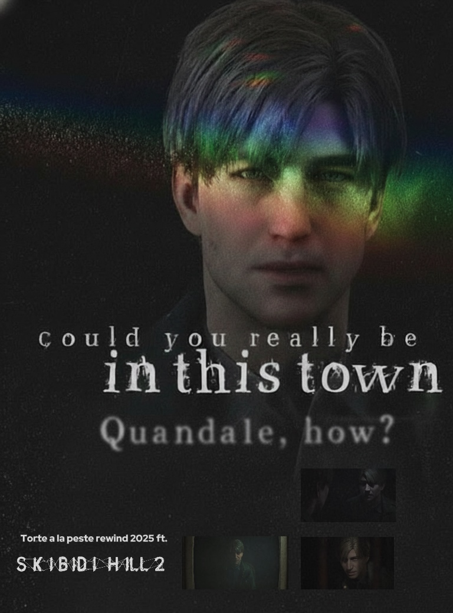
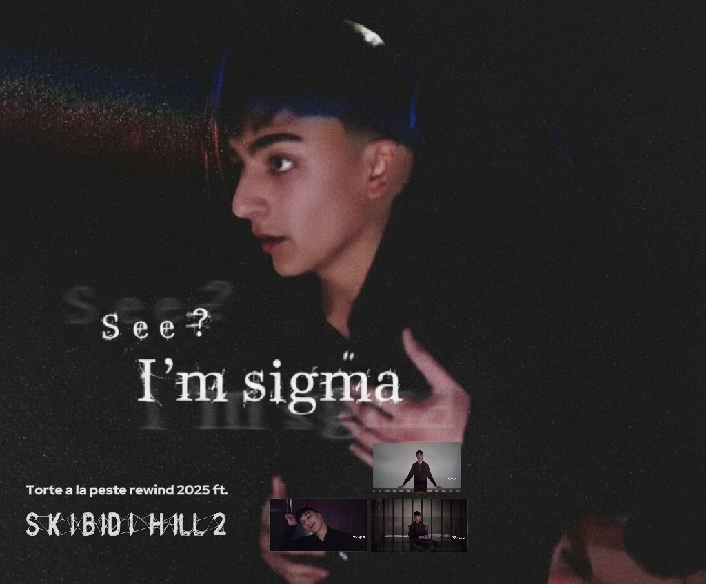
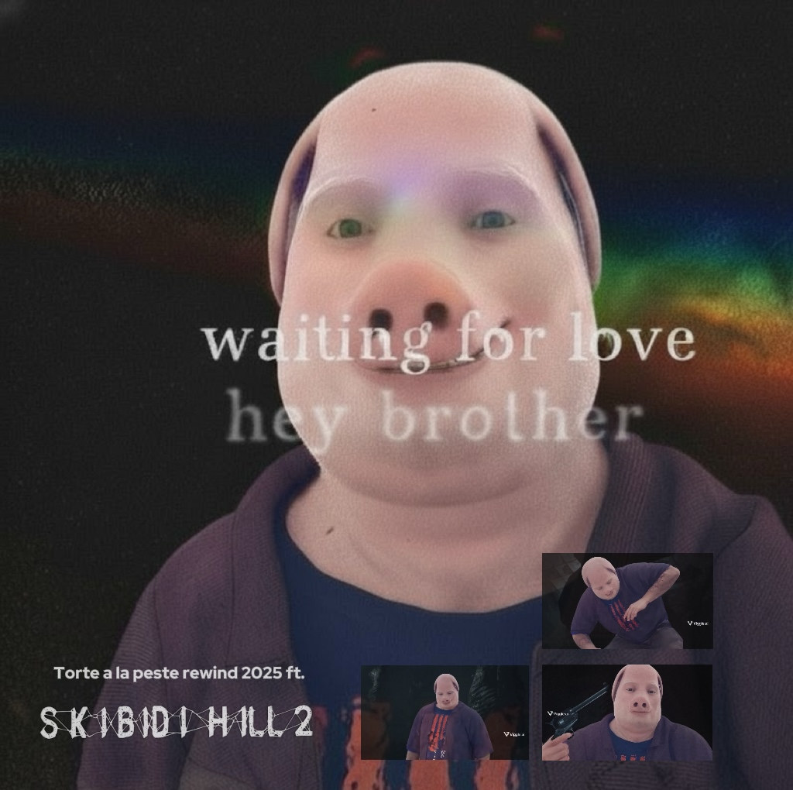
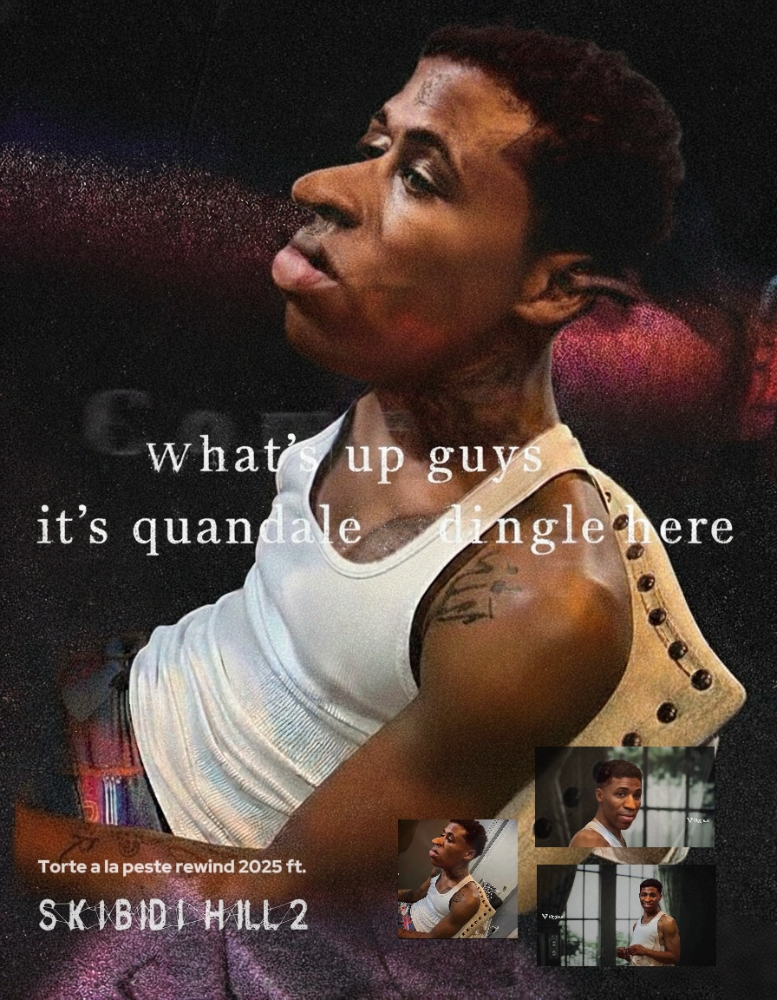
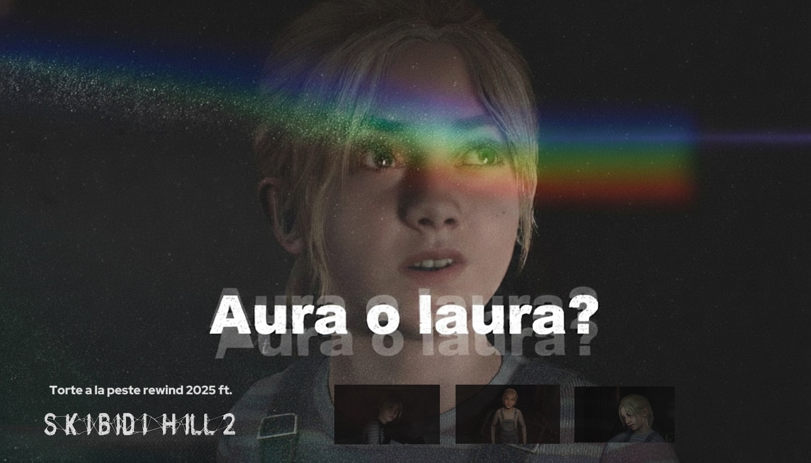
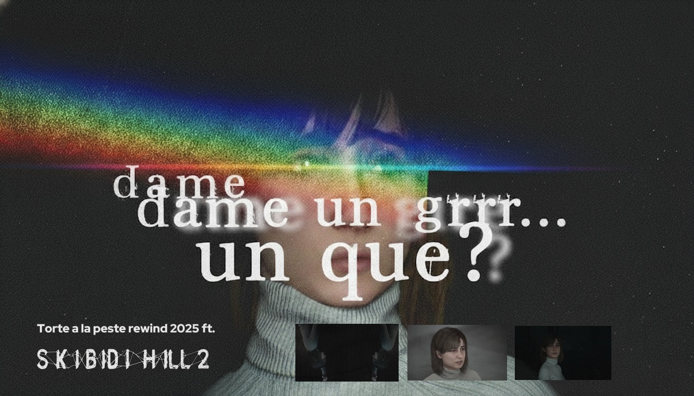
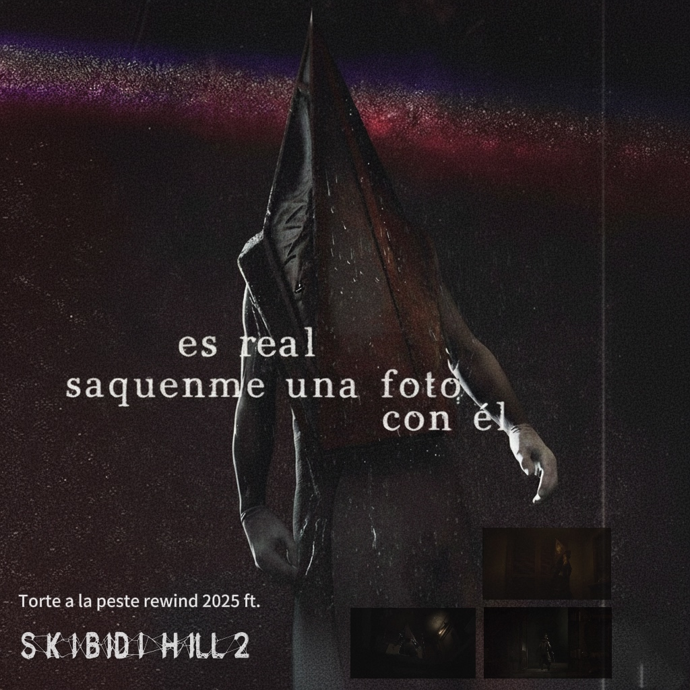

James Sunderland
Llega a Silent Hill tras recibir una carta de su esposa, que murió hace años. Busca respuestas en un pueblo que no deja de engañarlo.
"En mis sueños inquietos, veo ese pueblo..."
La niebla se acerca. Cuando el contador llegue a cero, la sirena volverá a sonar.
[ Acerca el cursor para sintonizar estática • Haz clic en una imagen para ampliar ]







[ Los que caminan entre la niebla ]
Llega a Silent Hill tras recibir una carta de su esposa, que murió hace años. Busca respuestas en un pueblo que no deja de engañarlo.
Una adolescente que intenta vivir una vida normal, hasta que el pasado del pueblo la alcanza y la obliga a enfrentarse a él.
Una figura enorme con un casco de metal en forma de pirámide, que arrastra un cuchillo gigante. Aparece cuando menos se lo espera.
Cinta No Encontrada
Guarda tu video con el nombre video.mp4 en la misma carpeta de esta página para reproducirlo al deslizar.
↓ Desliza hacia abajo para avanzar ↓